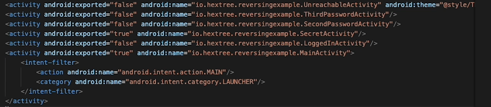

tools
- androidstudio
- jadx
- phone/emulater(androidstudio)
- adb
- apktool
basics
code
If you want to get good at hacking/reversing android applications, you will need to know the basics of how it is made, this is a really fast introduction to the most important parts of it.
package com.example.poc;
import android.content.Intent;
import android.net.Uri;
import android.os.Bundle;
import android.util.Log;
import android.view.View;
import android.widget.Button;
import android.widget.TextView;
import androidx.activity.EdgeToEdge;
import androidx.appcompat.app.AppCompatActivity;
import androidx.core.graphics.Insets;
import androidx.core.view.ViewCompat;
import androidx.core.view.WindowInsetsCompat;
public class MainActivity extends AppCompatActivity {
@Override
protected void onCreate(Bundle savedInstanceState) {
super.onCreate(savedInstanceState);
EdgeToEdge.enable(this);
setContentView(R.layout.activity_main);
ViewCompat.setOnApplyWindowInsetsListener(findViewById(R.id.main), (v, insets) -> {
Insets systemBars = insets.getInsets(WindowInsetsCompat.Type.systemBars());
v.setPadding(systemBars.left, systemBars.top, systemBars.right, systemBars.bottom);
return insets;
});
TextView appText = findViewById(R.id.apptext);
appText.setText("poc");
Button appButton = findViewById(R.id.appbutton);
appButton.setOnClickListener(new View.OnClickListener() {
@Override
public void onClick(View view) {
Log.i("Attack", "attack ran");
Intent intent = new Intent(Intent.ACTION_VIEW, Uri.parse("https://sysgerm.com"));
startActivity(intent);
}
});
}
}
This is the "MainActivity", normally this file will get ran on startup, along with some other functions.
Here are the basics you need to know about the code to get into android hacking:
TextView appText = findViewById(R.id.apptext);-> grab the element (from the xml) with their idappButton.setOnClickListener(new View.OnClickListener()-> add a onclick listener to a buttonLog.i("Attack", "attack ran");-> log messages to logcat (Log.x, x can be any of the severity levels)Intent intent = new Intent(Intent.ACTION_VIEW, Uri.parse("https://sysgerm.com"));-> create an intent
Severity levels:
- V -> Verbose
- D -> Debug
- I -> Info
- W -> Warning
- E -> Error
- F -> Fatal
- S -> Silent
Intents are one of the most important parts of android hacking because we can interact with other apps, we can get an intent using the getIntent() function.
You can find out more about the intent looking at the AndroidManifest.xml file:
// AndroidManifest.xml
<intent-filter>
<action android:name="android.intent.action.SEND" />
<data android:mimeType="text/plain" />
<category android:name="android.intent.category.DEFAULT" />
</intent-filter>
You can also customize the elements on the screen by:
- manually editing your xml file
- using the gui editor in androidstudio
WTF is JNI (Java Native Language)
JNI is the interface used to call in native code, commonly used to embed C or C++ code or libraries into an application
running your app
You can run your a various of ways, these are the couple of ways I do things:
- use androidstudio emulator
- connect to real device (with adb debugging on) on androidstudio
- using raw adb
adb
ADB is a very handy tool when creating/hacking android apps, you can interact with the connected device via your computer, some of the most important command include but are not limited to:
adb shell-> spawn a shell on the device as the shell user (limited privileges)adb push FILE OUTPUT-> puts a file on the device, must include an output pathadb pull FILE [OUTPU]-> pulls a file off of the phone onto your pc, you dont need an output pathadb install LOCALAPK-> installs a package on the deviceadb uninstall REMOTEAPK-> uninstalls a package on the deviceadb shell pm list packages [-3]-> lists all packages, pm stands for package manager,-3is used when you only want to see the third party packagesadb shell pm clear PACKAGE-> clears the data collected from a packageadb shell dumpsys [package] [PACKAGE]-> dumps information such as activities and permissions (for a package)adb shell am start PACKAGE/ACTIVITY-> starts a specific activity in a packageadb logcat [-v VERSION] "FILTER"-> spits out logging informationadb shell pm path PACKAGE-> get the path of the package
jadx
Jadx is a dex to java decompiler, it is used for the revese engineering of APK's.
It is very straight forward to use, there are a couple of things I always look out for:
AndroidManifest.xmlfile -> has alot of useful information like the activities and intent information- "Source code" -> for viewing a basic version of the source code used (look at the activities)
APK's
Now that we have basic tools and a basic understanding of android and java itself, we can start reverse engineering android apps.
Most android applications are written in Java or Kotlin, the java or kotlin code then gets converted into a .class file using the javac or kotlinc compiler. This .class file is just normal Java bytecode, the additional compiler d8 turns the .class file into a classes.dex file, this file contains dalvik byte code, a special type of code for android devices. This code then gets run by ART (Android Run Time) or on older devices the Dalvik VM.
Here is a step by step guide on how java/kotlin code gets ran on an android app:
- Java or Kotlin code gets compiled (by javac or kotlinc) and turned into a .class file
- D8 turns the .class file into a classes.dex file
- This classes.dex file (with dalvik code) gets ran by ART or Dalvik VM
But wait, why on android am I running an apk instead of the classes.dex file?
This is because an android app needs a few more files/resources to work properly. An APK is a combination of files being:
- classes.dex
- AndroidManifest.xml
- Resources
- Signature
This signature is very important, APK's are cryptographicaly signed so that only the real authors can change the code and build it, thats why if we change the code in an application when reverse engineering and not sign our new APK, we get an error that we can not run this file.
apktool
Now in the real world we could just rename the APK file to a .zip and extract it to get all of the items listed above but we are better than that, real reverse engineers use apktool.
This is a really handy tool for anything (you guessed it) APK
Here are a couple of basic commands:
apktool d APK-> this will disassemble the APKapktool b-> build the (changed) files- before changing anything to this app UNINSTALL THE APP
keytool -genkey -v -keystore KEYSTORE -alias ALIAS -keyalg RSA -keysize 2048 -validity TIME-> generate a self signed key for this application so it can runjarsigner -verbose -sigalg SHA1withRSA -digestalg SHA1 -keystore KEYSTORE APK KEY-> sign the apk itself- Sometimes you get an error saying
Failed to extract native libraries, you will have to changeextractNativeLibs="true"in your newAndroid.xmlfile
WTF is smali?!
I guessed now u noticed that the dex files are gone, its smali now, for now just know that smali is an assembler for dalvik bytecode. If you wanted to know how it dissasembles the code, it uses baksmali.
reverse engineering
Now that we have succesfully decompiled the APK we can start reverse engineering this sucker.
Here is how I go about reverse engineering any of my APK's:
- Look at the
AndroidManifest.xmlfile Look at the exported activities:

See where android:exported="true" - Exported activities can be started by other apps or (even) adb The activity that gets started when we launch the app is the one with the intent filter, MAIN and LAUNCHER
- Check for harcoded API keys/passwords/* with jadx (using global search, shared objects strings, etc.)
NOT FINISHED